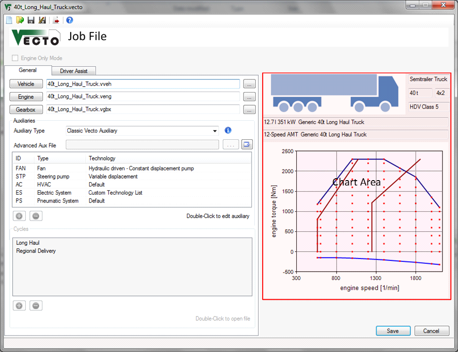
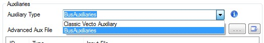
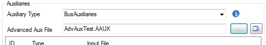

Job Editor

Description
The job file (.vecto) includes all information to run a VECTO calculation. It defines the vehicle and the driving cycle(s) to be used for calculation. In summary it defines:
- Filepath to the Vehicle File (.vveh) which defines the not-engine/gearbox-related vehicle parameters
- Filepath to the Engine File (.veng) which includes full load curve(s) and the fuel consumption map
- Filepath ot the Gearbox File (.vgbx) which defines gear ratios and transmission losses
- Auxiliaries
- Classic Vecto Auxiliaries
- Bus (Advanced) Auxiliaries (.aaux) which defines the set-up of advanced auxiliaries functionality for buses and coaches
- Driver Assist parameters
- Driving Cycles (not used in Batch Mode)
Relative File Paths
It is recommended to define relative filepaths. This way the
Job File and all input files can be moved without having to update the paths.
Example: "Vehicles\Vehicle1.vveh" points to the "Vehicles"
subdirectory of the Job File's directory.
VECTO automatically uses relative paths if the input file (e.g. Vehicle File)
is in the same directory as the Job File. (The Job File must be saved before
browsing for input files.)
General Settings
 Engine Only Mode
Engine Only Mode
Enables Engine Only Mode. Only the following parameters are needed for this mode:
- Filepath to the Engine File (.veng)
- Driving Cycles including engine torque (or power) and engine speed
Filepath to the Vehicle File (.vveh)
Files can be created and edited using the Vehicle Editor.
Filepath to the Engine File (.veng)
Files can be created and edited using the Engine Editor.
Filepath ot the Gearbox File (.vgbx)
Files can be created and edited using the Gearbox Editor.
Auxiliaries
To use the Advanced Auxiliaries functionality, select
“BusAuxiliaries” from the “Auxiliary Type” dropdown list.

Selecting “Classic Vecto Auxiliary” will bypass the Advanced Auxiliaries Model.
PLEASE NOTE: You must first create/save a valid main ‘.VECTO’ Job File for the simulation vehicle before you will be allowed to add/configure advanced auxiliaries (i.e., as above, the Job File must be saved before browsing for/creating input files).
Classic Vecto Auxiliaries
This list contains all auxiliaries used for calculation. The
auxiliaries are configured using the Auxiliary
Dialog. For each auxiliary an Auxiliary
Input File (.vaux) must be provided and the driving cycle must include the corresponding
supply power.
Double-click entries to edit with the Auxiliary
Dialog.
Add new Auxiliary
Remove the selected Auxiliary from the list
See Auxiliaries for details.
Bus (Advanced) Auxiliaries
Files can be created and edited using the Advanced Auxiliaries Editor.

If no file is present in the ‘Advanced Auxiliary File’ box, the browse button will open the File Open Command where an existing Advanced Auxiliaries (.aaux) file may be selected, or a new one created using default values.
Cycles
List of cycles used for calculation. The .vdri format is
described here.
Double-click an entry to open the file (see File Open Command).
Click selected items to edit file paths.
Add cycle (.vdri)
Remove the selected cycle from the list
Driver Assist Tab
In this tab the driver assistance functions are enabled and
parameterised.
Engine Start/Stop
See Engine Start/Stop for details.
Overspeed / Eco-Roll
See Overspeed / Eco-Roll for details.
Look-Ahead Coasting
See Look-Ahead Coasting for details.
Acceleration Limiting
See Acceleration Limiting for details.
Chart Area
If a valid Vehicle File, Engine File and Gearbox
File is loaded into the Editor the main vehicle parameters like HDV class
and axle configuration are shown here.
The plot shows the full load curve(s) and shift polygons. In Declaration Mode the generic
shift polygons are shown, not the ones from the Gearbox File.
Controls
New Job File
Create a new empty .vecto file
Open
existing Job File
Open an existing .vecto file
Save current Job
File
Save Job
File as...
Send current file to Job List in Main
Form
Note: The file will be sent to the Job List automatically when saved.
Open Vehicle Editor
Open Engine Editor
Open Gearbox Editor
 Browse for vehicle/engine/gearbox files; Browse (no file listed)/Open (file
listed) Advanced Auxiliaries Editor
Browse for vehicle/engine/gearbox files; Browse (no file listed)/Open (file
listed) Advanced Auxiliaries Editor
Hover
for information
 View file
contents or navigate to folder
View file
contents or navigate to folder
 Save and
close file
Save and
close file
File will be added to Job List in the Main Form
 Cancel
without saving
Cancel
without saving